守护白衣天使，每个人都献出了自己的力量
原文链接 备份链接 同力协契 共克时艰 武汉“封城”已三周，新冠肺炎全国感染人数还在持续上涨。 所有人都在期待拐点的到来，无数白衣天使依旧坚守在抗击疫情第一线，一刻不敢松懈。社会各界也在通过各种方式参与到这场没有硝烟的抗疫保卫战里。 这 …
澎湃新闻综合报道
新冠疫情发生以来，为了方便沟通交流，医护人员在背后写上名字，互相打气。
这些防护服上的字，如无声的誓词。
我们虽然看不见你们的脸庞，却从这些字里看到了希望。

“此行是为救治病人，不达目的不撤兵”——她是73岁的李兰娟院士。
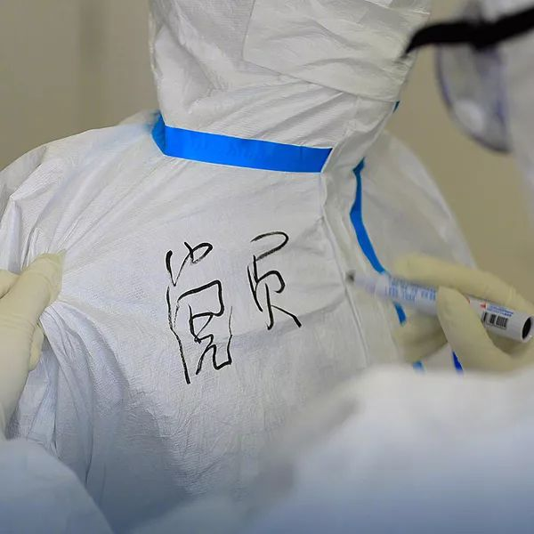
“我是党员，我先上”——许多医护工作者除了标注姓名外，还特别标注这两个字，这是一份责任，一份担当。

“这是责任，不能退缩。”——上海市中医院吴怡颖支援武汉金银潭医院。

“生在中国是件幸运的事情，危险的时候肯定不能退缩。”——95后男生许汉兵，武汉市四医院的一名护士。

“只要大家齐心协力，离战胜疫情就真的不远了”—— 2020年2月7日，98年出生的男护士易俊丰（左一）与同事张瑶（中）、杨彩霞（右），湖南省人民医院神经内科重症监护室。 尽管有被传染的风险，但易俊丰认为，做好防护就不怕，男护士体力充沛，具有较强的理性判断能力，在前线抗击疫情优势大。 新华社 图
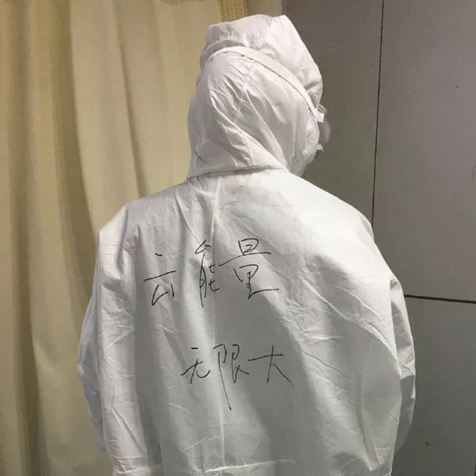
“在网上尽自己力量去关心病人的每一个人，都会让病人们感到感动，感到力量！这力量无限大！”——从1月23日21时许发出第一条求助微博，25岁的新冠肺炎痊愈者武康@BIGWUGOD发布了50余条微博，粉丝从1000涨至现在的179万粉丝。这些微博记录了他从发病住不进院的无助、被病魔折磨的痛苦、亲人好友陪伴的温情、医护耐心诊疗的敬业、受到网友鼓励的感觉以及痊愈出院的开心。
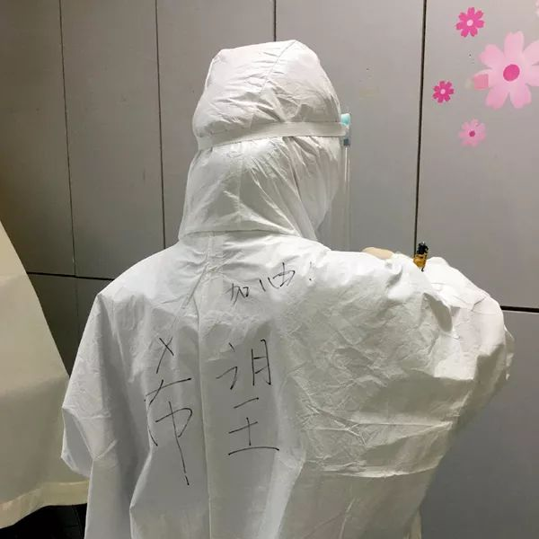
武康@BIGWUGOD出院前，看到了一位护士姐姐的名字反过来念就是“希望”，她的防护服上也写着“希望”。他说，“她们医护人员的坚守，给了我们这些病人希望。”

武康@BIGWUGOD记录：9日，一位护士妹妹的防护服上写着“有我在！雷神！”听说雷神山也准备开始收治病人了，得到救治的人一定会越来越多，情况也会越来越好的，我期望拐点早日到来。

武康@BIGWUGOD住院期间，一位护士背部写着“都好”，寓意一切都顺利，另一位打针的护士妹妹防护服背后写的是“晴朗”，她解释，她觉得这场疫情持续这么久了，应该是时候开始“转晴”了吧。
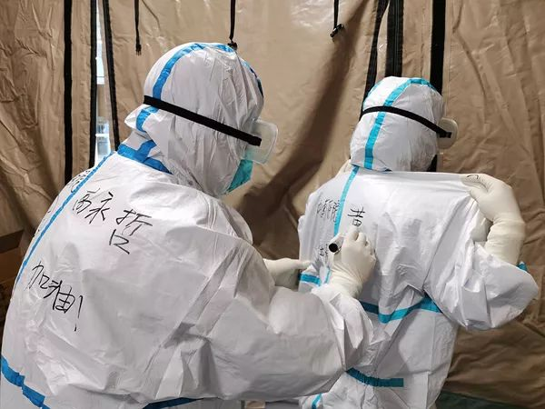
“一起度过的第23个情人节，虽然没有礼物和鲜花，但过得非常有意义。”——2月14日，高永哲在武汉客厅方舱医院为妻子黄文莉在隔离服上写上名字。新华社 图
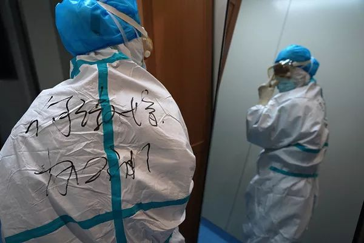
2月6日，在南昌大学第一附属医院象湖院区，值班护士何淑娟在镜子前穿防护服。新华社 图
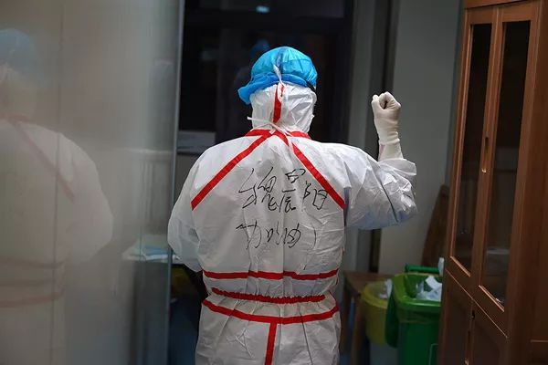
2月6日，南昌大学第一附属医院象湖院区，值班护士魏晨阳在进入隔离病房前，给自己加油。

“幕后战士”：与病毒面对面——2月13日，在合肥金域医学检验实验室，检验人员穿戴好防护设备后打出加油的手势。这里的检验人员3班倒，设备24小时不停机，实验室日检测能力超3000人份。 新华社 图
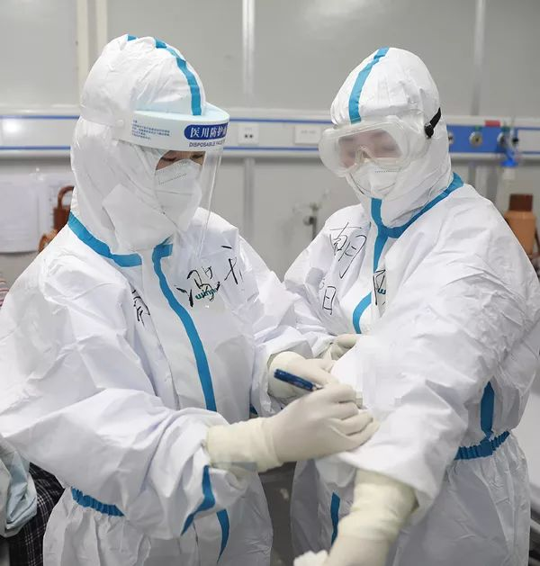
2月16日，在武汉雷神山医院病房，护士将患者的饮食注意事项写在防护服上。 新华社 图
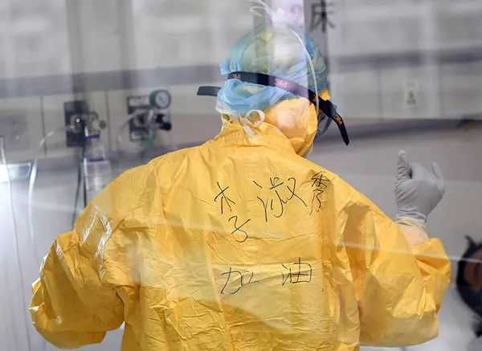
2月1日，在重庆三峡中心医院重症隔离病房，医务人员为患者治疗。 新华社 图

为了辨别谁是谁，也为了加油打气，@武汉市第一医院医护人员把名字写在了防护服上，武汉加油！

由于穿上防护服后看不清楚脸，大家都一个样，为了方便沟通交流，医护人员在背后写上名字，互相打气。
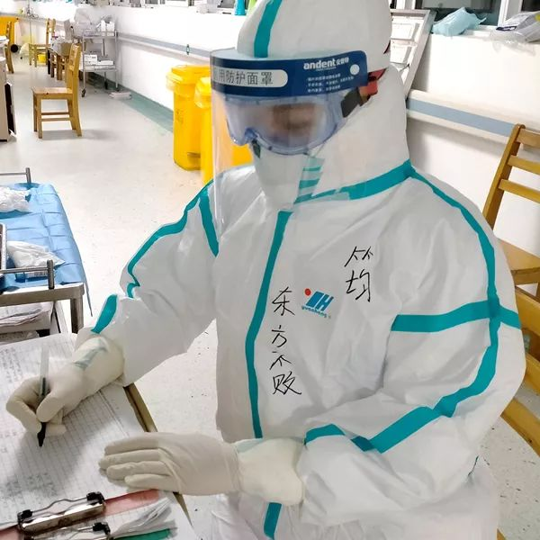
“今年武汉的冬天一点都不冷，因为有我们这帮热血青年的存在！ ” ——上海东方医院的90后二胎妈妈徐筠支援金银潭医院ICU
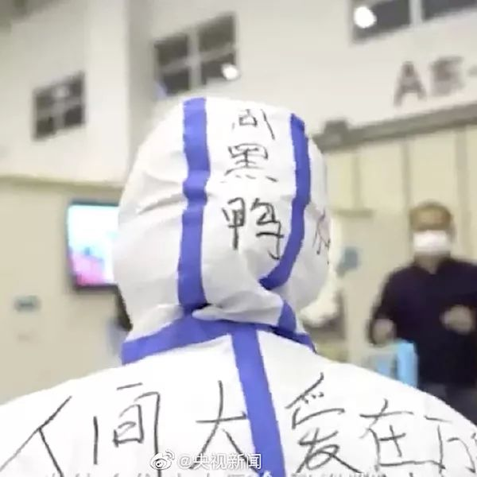
方舱医院医护人员，在防护服上写“周黑鸭”、“热干面”标记自己。
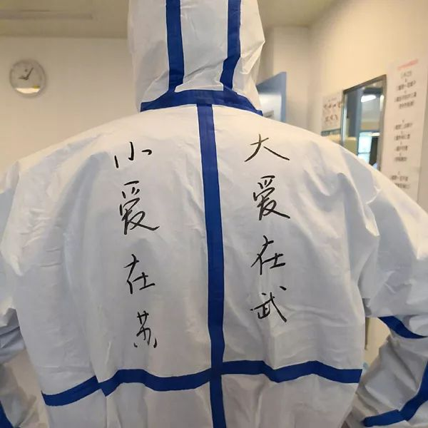
“小爱在苏，大爱在武”——苏州大学附属第一医院援鄂医疗队
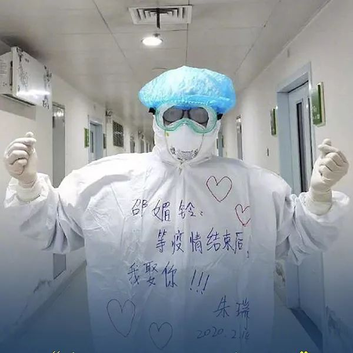
本来准备过年时定亲，没想到疫情来袭，驰援武汉抗疫一线的福州市第一医院男护士朱瑞，在防护服上对女朋友表白：等疫情结束后我娶你。

将对远方家人的爱写在防护服上，也给患者带去爱的鼓励——苏州大学附属第一医院和南京市第一医院支援湖北医护工作者们的“特别创意”。
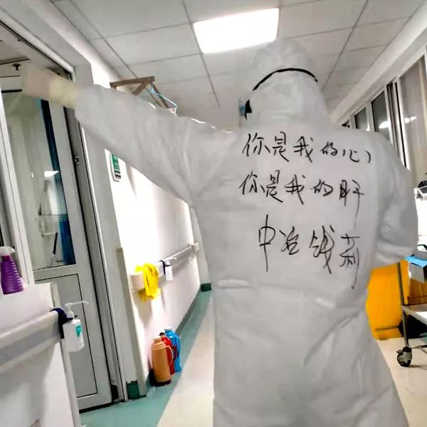
在武汉金银潭医院，上海医疗队的医护人员在自己的防护服上写下自己的名字和给自己加油打气的话语。

这些直白而深情的话语，是14日上岗前，是南京市第一医院支援湖北医护工作者们的“特别创意”。

将对远方家人的爱写在防护服上，也给患者带去爱的鼓励——苏州大学附属第一医院和南京市第一医院支援湖北医护工作者们的“特别创意”。

在武汉金银潭医院，上海医疗队的医护人员在自己的防护服上写下自己的名字和给自己加油打气的话语。

妻子是湖北天门人，这名军医说自己就是半个湖北人。亲人生病了，当然要尽力。
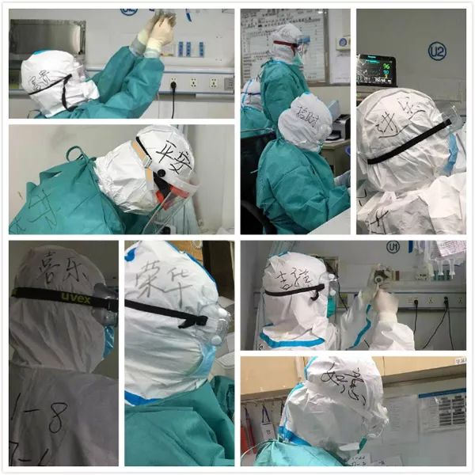
为方便辨认，支援汉口医院的8名中山三院青年“战疫”突击队员，在防护服上写下名字：吉祥、如意、平安、喜乐、荣华、富贵、招财、进宝。起因是有个队员叫吉祥，大家顺着思路，就用吉祥话取名。队长段孟岐说，希望给患者、给队友带来好心情。

“我斩新冠，携汝赏樱”，医护人员将誓言写在防护服上。

希望你是夜晚最亮的星。在武汉金银潭医院，来自上海奉贤区中心医院的蒋惠佳在防护服上写下自己的名字和给自己加油打气的话语。

海军军医大学医疗队医护人员将名字写在防护服上作为身份标识。
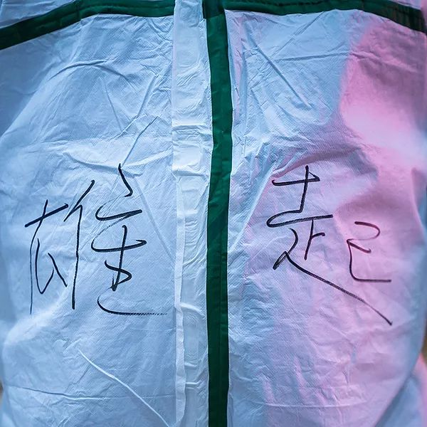
希望武汉像我的肚子一样“雄起”——四川援鄂医疗队男护士乐磊上岗第一天，武汉客厅方舱医院门口。
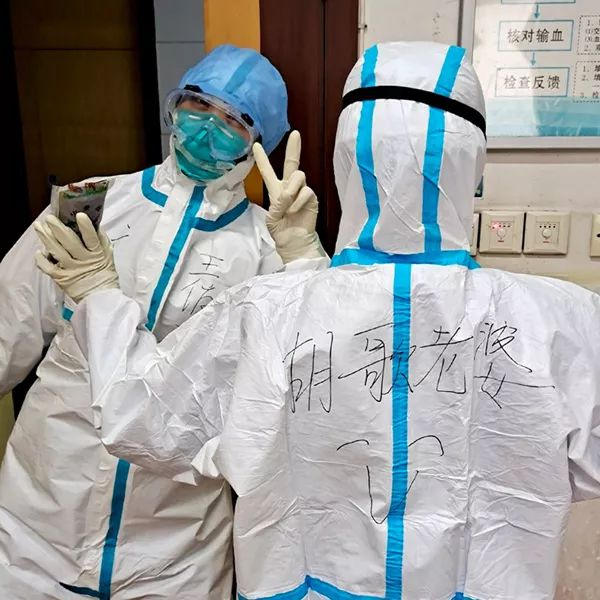
近日，身在武汉的护士“提灯的曾pongpong”晒出自己在防护服上写上“胡歌老婆”的照片，称希望这样可以缓解病房沉重的气氛。16日，@胡歌 转发微博回应道：“你是最美丽的小光头，期待疫情早日过去，期待早日掀起你的’盖头’来。这个名字暂时借你一用，之后记得还给我哦。”当日#胡歌 期待早日掀起你的盖头来#上了微博热搜的第一名。
本期编辑 常琛
推荐阅读


原文链接 备份链接 同力协契 共克时艰 武汉“封城”已三周，新冠肺炎全国感染人数还在持续上涨。 所有人都在期待拐点的到来，无数白衣天使依旧坚守在抗击疫情第一线，一刻不敢松懈。社会各界也在通过各种方式参与到这场没有硝烟的抗疫保卫战里。 这 …
原文链接 备份链接 湖南援鄂护士在武汉金银潭医院ICU五日记丨新冠肺炎亲历 2020-02-01 14:32 作者：刘颂辉 来源：中国经营网 本报记者 刘颂辉 上海报道 “在前往武汉之前，我做好充足的准备接受各种困难，然而当我真正融入到武 …
原文链接 备份链接 “一百多人来自上海不同的医院，大家首先要内部磨合，我们的医护人员还要与武汉当地医护人员磨合。我们计划用3-5天来完成磨合，然后科学分配，提高工作效率。” 文 | 黄 祺 今日全国新冠肺炎确诊人数过万，武汉的重症患者还在 …
原文链接 备份链接 支援武汉的医护人员已上千，地方900多人，军队450人，随后将再派1600多人。 武汉医护人员身心俱疲，难以应对不断增长的病例和民众的恐慌。 外援的到来，缓解了他们的负担。不少援汉医护人员感到，仅从肺炎诊治难度而 …
原文链接 备份链接 一座人口过千万的超级大都市在突降灾疫后陷入休克，然后艰难走出混乱无望 财经封面。创意设计/黎立 文 |《财经》特派武汉记者 刘以秦 信娜 王小《财经》记者 房宫一柳 黎诗韵 俞琴 王丽娜 王静仪 陈亮 李斯洋 李皙寅 …